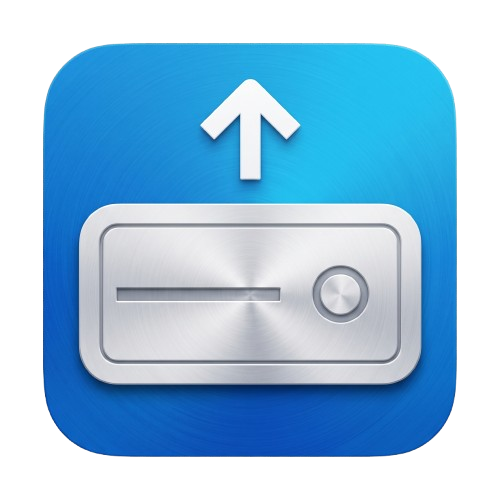
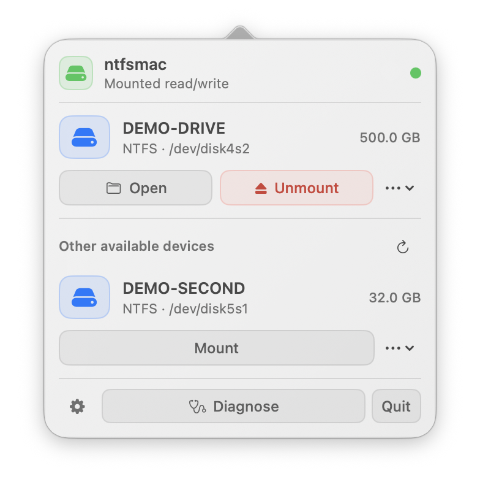
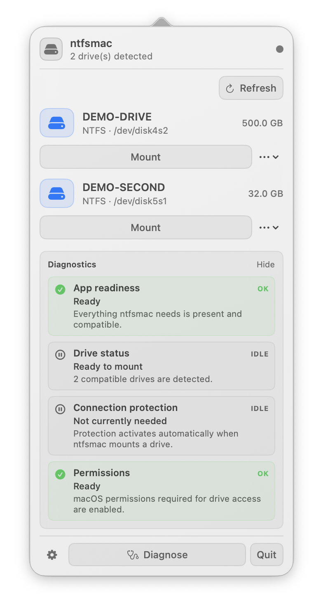
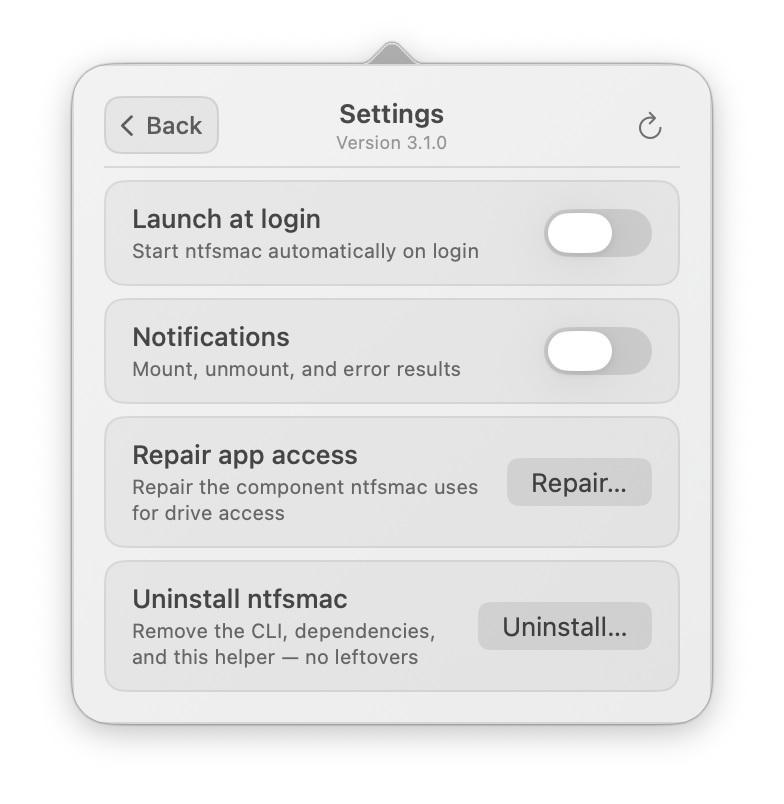
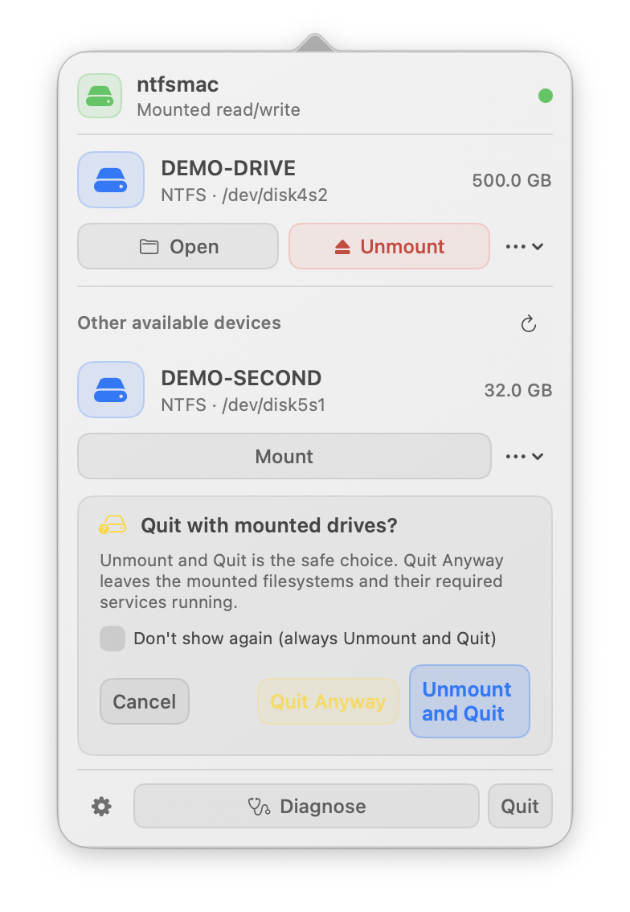
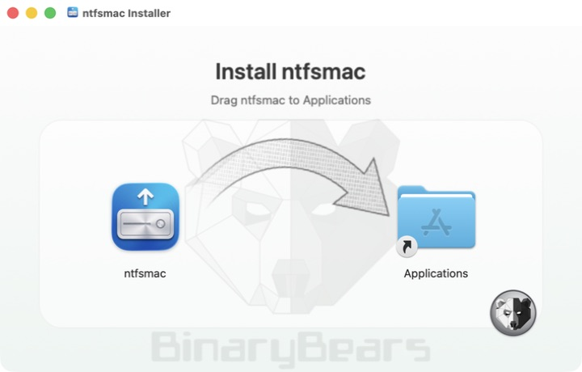

macOS 26.6.2 · M5
Native app, helper and pinned runtime checks. NTFS write, flush, remount and SHA-256 verification; mixed NTFS/ExFAT detection. Other chips and longer workloads still need coverage.

ntfsmac3.1.3 candidate · Open source · Apple Silicon
Mount NTFS drives read/write from a focused native menu-bar app, with a modern macOS helper, isolated networking and diagnostics written for people.
Latest published release on GitHub
3.1.3 is undergoing local validation and is not yet published. The download button always opens the latest published release.
Compatibility evidence
A minimum system requirement is not a claim that every supported Mac has been tested. These are local results, not a completed release qualification.
Native app, helper and pinned runtime checks. NTFS write, flush, remount and SHA-256 verification; mixed NTFS/ExFAT detection. Other chips and longer workloads still need coverage.
App launch, native Settings/error-view rendering and bundled executable loading. Helper/CLI 31302 installation passed after cleaning stale test registrations. Read/write is not confirmed: the local VM cannot expose the nested Hypervisor access required by the filesystem runtime.
Native end-to-end results are still needed, including macOS 15 and other M-series chips. Intel and macOS 13 or earlier are outside the 3.1.3 target. Earlier 3.1.2 builds declared macOS 13+ on Apple Silicon.
Help extend this coverage: report the app version/build, macOS version, chip family, filesystem and operations completed. Successful tests are welcome alongside bug reports. Use backed-up or disposable media. Hold Command (⌘) while clicking Diagnose to export JSON, review it, then attach it to your report. Nothing is uploaded automatically. Community reports are tracked separately from maintainer verification.
A lighter footprint
ntfsmac slows its background work when the menu is closed and wakes only when you need it. Explore the measured footprint in three everyday moments.
At rest
The menu stays ready while ntfsmac settles into a slower background rhythm.
Quiet by design. Enough headroom that ordinary use stays comfortably below one percent of a CPU core and system memory.
Local 10- and 30-minute samples on a 24 GB Apple Silicon Mac. CPU is a time-based process average; mounted memory includes ntfsmac and its private filesystem runtime. Battery wording is an estimate based on measured CPU activity and wakeups, not a battery-life guarantee. Values are rounded up for a clear, conservative summary. These historical 3.1 measurements have not been repeated for the 3.1.3 candidate.
Small app, serious boundary
ntfsmac runs the filesystem in a lightweight Linux virtual machine and exposes the result locally to macOS. The interface keeps mount state, safety checks and recovery close at hand.

The 3.1 interface
Diagnose groups the real checks into four readable outcomes. Settings keeps navigation, version and update check on one line. When storage is active, Quit makes the safe choice explicit instead of silently leaving services behind.



Installation
The 3.1.3 distribution will contain one Standard DMG for Apple Silicon, targeting macOS 14+. Legacy is deprecated. Check the compatibility evidence above and the requirements of the actual published release before installing.

Get the latest signed Apple Silicon DMG from GitHub Releases.
Drag ntfsmac to Applications and open it.
Allow ntfsmac in Login Items and grant Full Disk Access when macOS asks.
Upgrading to the Standard build verifies its modern helper first, then removes the retired Legacy helper. macOS may ask you to approve access again.
Security & privacy
The app checks GitHub at most once every 24 hours for the latest published release. It never downloads or installs updates on its own. Automatic network errors stay silent and mount operations do not depend on the check.